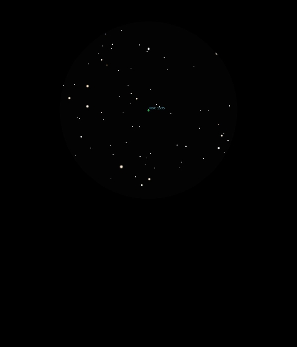

NGC 1535
Planetary Nebula in Eridanus
NGC 1535
Mag 10.5
Cleopatra's Eye
20/01/17
Quite bright and distinct Planetary Nebula, although just like
an out of focus star until zoomed into 8mm where it has a
distinct round shape although I couldn't see it's central star
at all
Cleopatra's Eye is a good name though!
One of AN's deep sky challenges for January, I suspect some of
the others will be too faint but worth a try